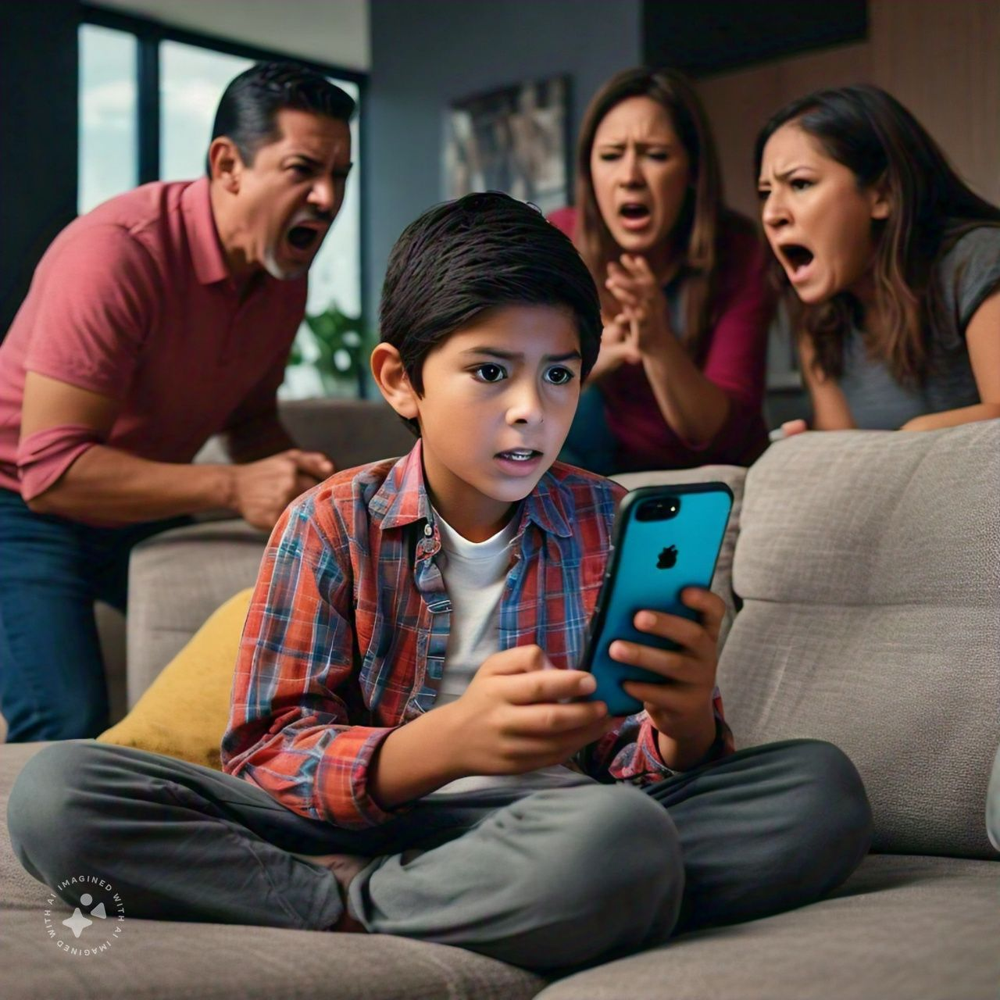
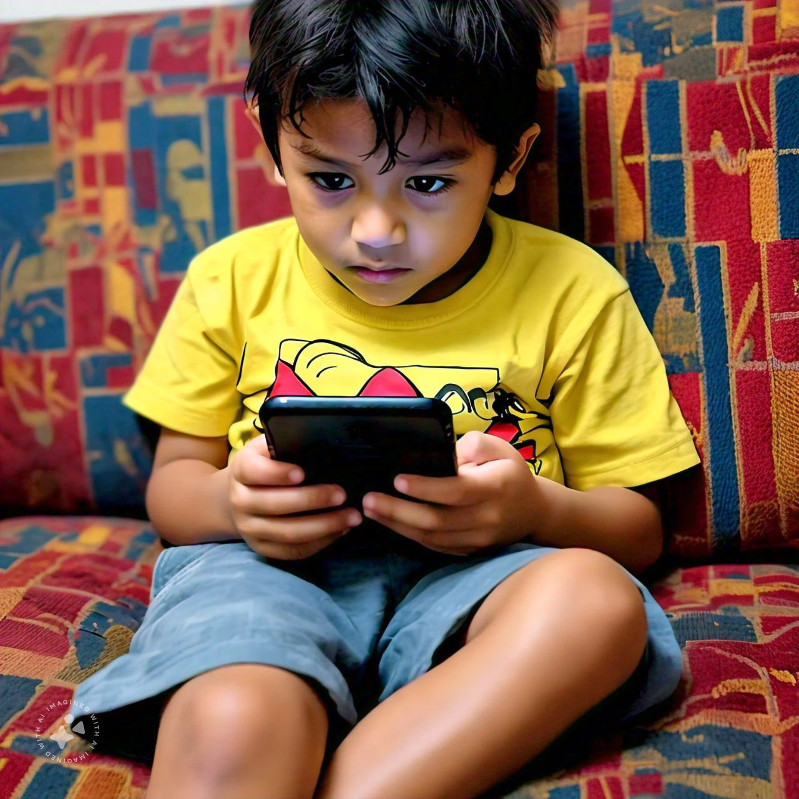

- "Mobile phones distract children from physical activities and outdoor play."
- Rebuttal: "Mobile phones can also encourage physical activity through fitness apps and games."
- "Mobile phones expose children to online risks and cyberbullying."
- Rebuttal: "Parental guidance and monitoring can mitigate these risks."
Affirmative Side: Mobile Phones are Good for Children
Opening Statement:
"Mobile phones have revolutionized the way we live, and children are no exception. In today's digital age, mobile phones provide numerous benefits for children, including access to information, educational resources, and connectivity with parents and peers. With proper guidance, mobile phones can be a valuable tool for children's growth and development."

Arguments:
- Educational benefits: Mobile apps and online resources provide interactive learning experiences.
- Safety and security: Mobile phones enable children to contact parents or authorities in emergencies.
- Social skills development: Mobile phones facilitate communication and socialization with peers.
- Access to information: Mobile phones provide instant access to information, promoting curiosity and knowledge.
- Preparing for the digital future: Mobile phones familiarize children with technology, essential for future careers.

Counterarguments and Rebuttals
Closing Statement:
"While concerns about mobile phones exist, responsible usage and parental involvement can maximize benefits. Mobile phones are not inherently good or bad; it's how we utilize them that matters. By embracing mobile technology, we can empower children to thrive in the digital age."

Negative Side
Opening Statement:
"Mobile phones pose significant risks to children's physical, emotional, and cognitive development. Excessive screen time, online dangers, and social comparison can lead to addiction, anxiety, and decreased attention span. We must prioritize children's well-being over the convenience of mobile phones."
Arguments:
- Addiction and distraction: Mobile phones hinder focus and lead to decreased productivity.
- Online risks: Cyberbullying, predators, and explicit content threaten children's safety.
- Physical health consequences: Excessive screen time contributes to obesity, sleep deprivation, and eye strain.
- Social skills impairment: Mobile phones reduce face-to-face interaction and empathy
- Unhealthy comparison: Social media fosters unrealistic expectations and low self-esteem.
Counterarguments and Rebuttals:
- "Mobile phones provide educational benefits and access to information."
- Rebuttal: "Traditional methods, like books and teachers, are more effective and healthier."
- "Mobile phones are necessary for safety and security."
- Rebuttal: "Alternative measures, like wearable devices or basic phones, can ensure safety without exposing children to risks."
.png)
Closing Statement:
"Mobile phones are not worth the risks they pose to children's well-being. We must prioritize a balanced, healthy lifestyle and consider alternative solutions. By limiting mobile phone usage, we can protect children's innocence, creativity, and potential."
